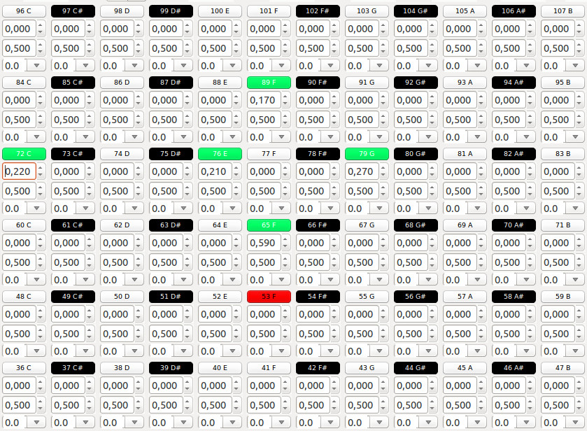

Oscillators Panel

Oscillators panel is made of several oscillators tuned by semitones (frequency determined by tuning used) each with it's own
volume, panning, modulation speed.
-
Top button - indicates the number (midi note), name of the note and status. If the oscillator is outputting sound is green, if oscillator
is selected (by clicking on it) as lowest (for pythagorean tuning) is red otherwise (if inactive) it's black/white according to note rapresented.
Active or inactive status is determined by oscillator volume.
-
Volume - Sets the volume of the oscillator
-
Pan - Sets the pan position of the oscillator
-
Modulation - Drop down menu to select the speed of modulation relative to global BpM
Back to main page